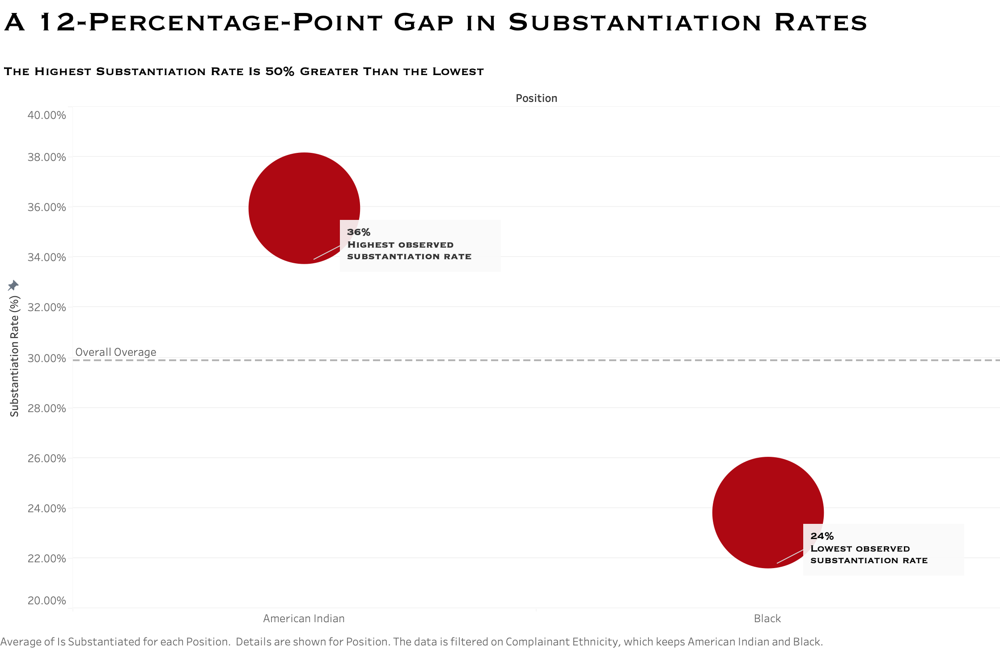
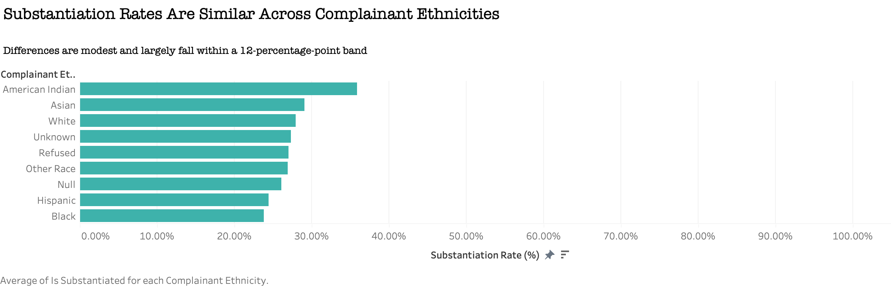

Proposition: NYPD complaint substantiation rates vary substantially depending on the complainant’s ethnicity.
FOR the Proposition

Design Decisions and Rationale:
- Score: -1.5 — I filtered the visualization to show only the highest and lowest substantiation rates rather than displaying the full distribution of complainant ethnicities. This isolates the most dramatic comparison and encourages the viewer to interpret the difference as the central takeaway. The values themselves are correct, but the choice hides the fact that most other groups fall between these extremes.
- Score: -1.0 — The title frames the gap using relative language (“50% greater than the lowest”). As discussed in Hullman & Diakopoulos’s work on visualization rhetoric, framing effects can significantly influence interpretation. Expressing the difference as a relative percentage makes the gap feel larger and more consequential than stating the absolute difference alone.
- Score: -1.5 — The y-axis is zoomed to the observed range (roughly 20%–40%). This visually amplifies the difference between the two points. If the axis extended from 0–100%, the same gap would appear far smaller and less visually dramatic.
- Score: +0.5 — I added a reference line showing the overall average substantiation rate. This provides some context so the viewer can evaluate whether each group sits above or below the typical rate.
- Score: +1.0 — I annotated the exact percentages directly on the chart. This helps ensure that the underlying values remain transparent even though the design highlights a dramatic comparison.
AGAINST the Proposition

Design Decisions and Rationale:
- Score: +1.5 — I included all complainant ethnicity categories in the chart rather than highlighting the extremes. This allows viewers to see the full distribution and recognize that most groups cluster relatively closely together.
- Score: +1.0 — The x-axis runs from 0% to 100%. As Kennedy et al. note in “The Work that Visualization Conventions Do,” familiar conventions such as full axes often signal neutrality and help avoid exaggerating differences.
- Score: +0.5 — The subtitle explicitly notes that differences fall within a ~12-percentage-point band. This frames the interpretation without hiding the quantitative range of the data.
- Score: +1.0 — I used a single consistent color across all categories. This avoids visually privileging any one group and keeps attention focused on the magnitude of differences rather than implying categorical hierarchy.
- Score: +2.0 — I kept categories like Unknown, Refused, and Null rather than removing them. Although these categories make the chart slightly messier, including them reflects the dataset more honestly and acknowledges the uncertainty present in real-world data collection.
Final Reflection
Working on this assignment made it clear how easily the same dataset can support two very different narratives depending on visualization choices. When I first explored the complaint dataset, I assumed the results would naturally speak for themselves once the substantiation rates were calculated. However, as soon as I began experimenting with different chart designs, I realized that small decisions—such as filtering categories, choosing axis scales, or framing the title—dramatically influenced the story the visualization communicated. This aligns closely with Hullman and Diakopoulos’s concept of framing effects in narrative visualization: the numbers themselves did not change, but the structure of the visual narrative shaped how viewers interpreted them.
One of the most surprising aspects of this process was how strongly visualization conventions influence perceived credibility. Kennedy et al. argue that conventions like full axes and familiar chart types perform “interpretive work” for readers, signaling fairness and neutrality even before the data is analyzed. When comparing the zoomed-axis chart to the full 0–100% version, the zoomed chart felt much more dramatic, while the full-scale version appeared calmer and more balanced—even though both represented the exact same values. Kong et al.’s research on slanted titles also became relevant; simply adjusting how the headline framed the difference significantly shaped the reader’s interpretation before they even processed the chart itself. After completing this assignment, I think ethical visualization is less about avoiding persuasion entirely and more about maintaining transparency about what the data can actually support. Persuasion becomes misleading when it removes essential context or exaggerates relationships that would appear modest if viewers saw the full distribution. This exercise made me realize how thin that line can be and why careful annotation, context, and metadata—like those discussed by Burns et al.—are critical components of responsible data communication.